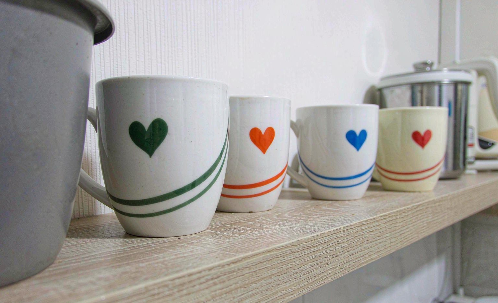

Short answer: the best custom mugs for daily use pair a thick ceramic body with a sublimation coating rated for thousands of washes. We used six custom mugs every day for three months, running them through coffee, tea, and the occasional drop on the counter. Only two mugs still looked brand new at the end. Here's the verdict: spend a few dollars more on heavyweight ceramic.

How We Tested
We ordered six mugs with the same design from Zazzle and Personalization Mall, priced between $14.99 and $32 each, across different styles: two standard lightweight ceramic mugs, two heavyweight ceramic mugs, one enamel camp-style mug, and one inner-color ceramic mug. Every mug was used daily, hand washed in the evening, and inspected weekly under bright light for print dulling, chipping, and handle stress.
Six Mugs, Three Months of Use
| Mug Type | Print Durability | Daily Comfort | Verdict |
|---|---|---|---|
| Lightweight ceramic | Good, slight dulling at rim by month three | Fine but feels thin | Acceptable budget choice |
| Heavyweight ceramic | Flawless at three months | Excellent, retains heat well | Our top pick |
| Enamel camp mug | Chipped at the rim from a counter drop | Fun but lighter heat retention | Situational |
| Inner-color ceramic | Flawless print, glaze on inner rim shows utensil marks | Excellent | Strong second choice |
Three Months Later: The Full Results
The heavyweight ceramic pair came through untouched, and the difference in hand feel was obvious from the first week; they simply feel like a mug you would be given in a cafe. The lightweight pair developed a faint dulling near the rims, though the main designs remained sharp. The enamel mug took a chip when it hit the counter, which is enamel being enamel rather than a print failure. The inner-color mug earned a permanent place in the reviewer's own cupboard.
What to Look For When Ordering
- Choose 11 to 15 ounce heavyweight ceramic for anyone who drinks coffee or tea daily
- Confirm the coating is rated for sublimation, which all reputable sellers specify
- Pick designs placed away from the rim and handle, where chips and wear start
- Read the care instructions before gifting, and pass them on; see our guide to keeping custom mug prints flawless
Final Thoughts
The gap between the best and worst mug in this test was a couple of dollars at order time, yet after three months only one pair still looked gift-box new. For a gift, that difference is the whole point. Order heavyweight ceramic, hand wash from day one, and a custom mug can look new for years of daily use, as our mug care story demonstrates from the buyer's side.
Frequently Asked Questions
What type of custom mug lasts longest?
Heavyweight ceramic with a quality sublimation coating lasted best in our three-month daily-use test, showing no print dulling or chipping at the end of the review period.
Are enamel mugs good for custom printing?
They print acceptably and suit outdoor use, but enamel chips at the rim when dropped and retains less heat than ceramic. We recommend them for camping use rather than daily home use.
How much should I spend on a custom mug?
A few dollars more buys heavyweight ceramic over lightweight options, and our testing showed that difference determines how the mug looks after months of daily use.
Do custom mugs fade in the microwave?
Repeated microwaving gradually degrades the coating over printed areas. Occasional use is fine, but daily microwave reheating will shorten the life of any printed design.